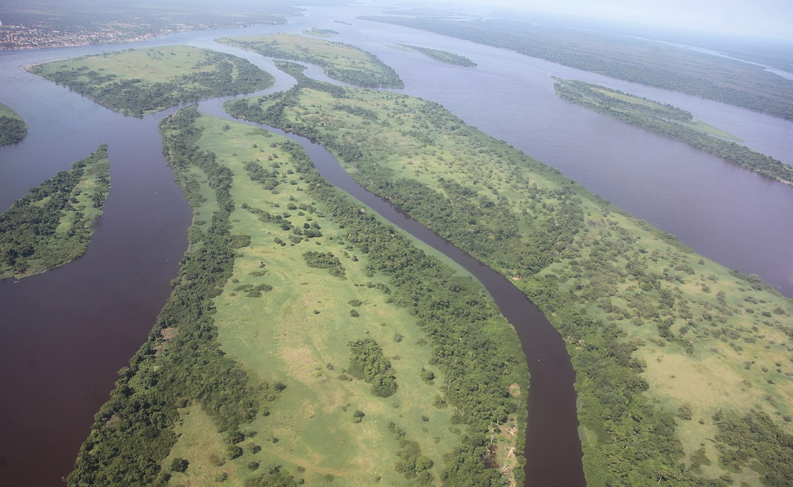

Virunga National Park

The Virunga National Park is one of the most biodiverse places in the world, home to mountain gorillas, volcanoes, and lush rainforests. It represents both the natural beauty and ecological importance of the Democratic Republic of the Congo.

Congolese Music and Art
The DRC is internationally renowned for its Rumba Congolaise, a music style recognized by UNESCO as an intangible cultural heritage of humanity. Music, dance, and art are central to the country’s cultural identity and daily life. Some local singer are rebo tshulo or fally ipupa
The Congo River and Rainforest
The Congo River is the second-largest river in the world by volume and runs through vast tropical rainforests. This ecosystem is home to incredible biodiversity and plays a vital role in the culture and livelihood of millions of Congolese people.